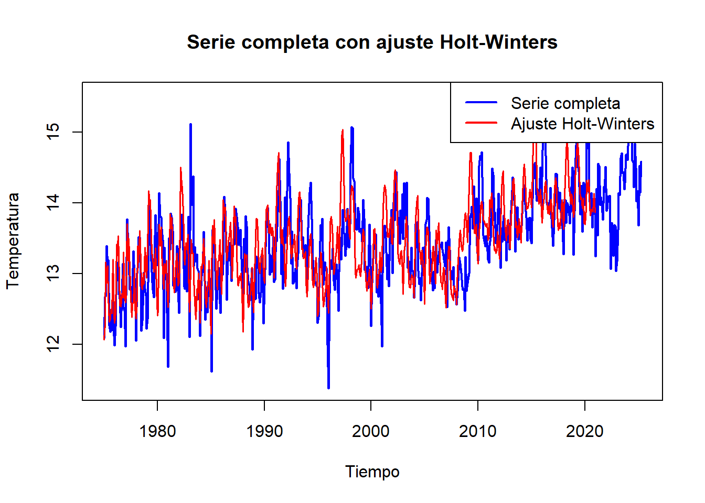
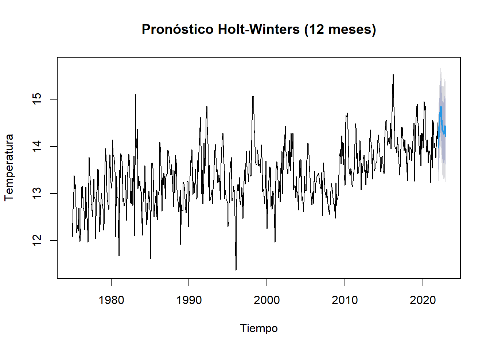

Capítulo: 4 Holt-Winters.
Christian Vera, Yuli Deaquiz y Juan Rodríguez
10/05/2025
El modelo de Holt-Winters, permite analizar series de tiempo univariantes que contienen factores de tendencia y/o estacionalidad, involucrando un enfoque de suavización exponencial con métodos analíticos y patrones aditivos y multiplicativos.
Es un método mejorado para calcular pronósticos cuando los datos muestran una tendencia y además estacionalidad, por lo cual se incorporan 3 constantes, que son α y β, según la metodología de Holt el cual tiene encuenta el nivel de los datos y su tendencia, agregando además γ, el cual incluye la estacionalidad, cuyos valores también deben estar entre cero y la unidad.
Para este ejercicio se dividio la base de datos en una base de entrenamiento y un test de prueba de la siguiente forma:
Base de entrenamiento: del periodo de 1975 a 2021.
Base de prueba: periodo de 2022 en adelante.
Code
# Cargar paquetes necesarios
library(tidyverse)
library(lubridate)
library(forecast)
library(kableExtra)
# 1. Cargar y preparar los datos
url <- "https://raw.githubusercontent.com/christianveram/Series_de_tiempo/refs/heads/main/bases/temperaturas_final.csv"
datos <- read.csv(url)
datos$time <- as.Date(datos$time)
datos_filtrados <- datos %>%
mutate(fecha = as.Date(time),
tavg = round(tavg, 2)) %>%
filter(fecha >= as.Date("1975-01-01")) %>%
arrange(fecha)
# 2. Agregar datos por mes (promedio mensual)
datos_mensuales <- datos_filtrados %>%
mutate(anio_mes = floor_date(fecha, "month")) %>%
group_by(anio_mes) %>%
summarise(tavg = mean(tavg, na.rm = TRUE)) %>%
ungroup()
# 3. Convertir a serie temporal
ts_temp <- ts(datos_mensuales$tavg,
start = c(year(min(datos_mensuales$anio_mes)), month(min(datos_mensuales$anio_mes))),
frequency = 12)
# 4. Separar en conjunto de entrenamiento (hasta 2021) y prueba (desde 2022)
ts_train <- window(ts_temp, end = c(2021, 12))
ts_test <- window(ts_temp, start = c(2022, 1))
# 5. Ajustar modelo Holt-Winters clásico
modelo_hw <- HoltWinters(ts_train)4.1 Ajuste Holt-Winters.
Code
# 6. Graficar la serie completa con ajuste
# Crear una serie para el ajuste de Holt-Winters
ajuste_completo <- ts(fitted(modelo_hw)[,1], start = start(ts_temp), frequency = 12)
# Graficar la serie original con el ajuste
plot(ts_temp, main = "Serie completa con ajuste Holt-Winters",
col = "blue", lwd = 2, ylab = "Temperatura", xlab = "Tiempo")
lines(ajuste_completo, col = "red", lwd = 1.5)
legend("topright", legend = c("Serie completa", "Ajuste Holt-Winters"),
col = c("blue", "red"), lwd = 2)
Figura 4.1. Serie temporal método Hold-Winters para la temperatura promedio de la ciudad Bogotá DC.
Se puede observar en la figura 4.1 que el modelo Hold-Winters muestra un buen ajuste de la variable, ya que la linea roja (modelo de Hold-Winters) es cercana a la serie original (linea azul), sin embargo, no puede captar todas las fluctuaciones menores que puede asociarse a datos atipicos en algunos periodos de tiempo, que pueden estar asociados al fenómeno del niño y la niña.
Además, este modelo esta diseñado para capturar patrones de tendencia y regularidad que pueden verse influenciados en este caso por fenomenos climáticos.
4.2 Pronóstico Holt-Winters (12 meses)
Code

Figura 4.2. Pronóstico Holt-Winter para la temperatura promedio de la ciudad de Bogotá DC.
En la figura 4.2 se observa con una confiabilidad del 95% representada en las lineas grises, que la temperatura promedio oscilará entre 14 a 15 °C para los siguientes 12 meses entre 2022-1 a 2022-12, sobre los cuales se realizó la evaluación del modelo.
4.3 Métricas de desempeño.
Code
# 9. Calcular métricas de evaluación sobre el conjunto de prueba
metricas <- accuracy(pronostico, ts_test)
metricas_df <- as.data.frame(metricas)[2, c("ME", "RMSE", "MAE", "MAPE")]
# Convertir a data frame con nombres descriptivos
metricas_df <- data.frame(
Métrica = c("Error Medio (ME)",
"Raíz del Error Cuadrático Medio (RMSE)",
"Error Absoluto Medio (MAE)",
"Error Porcentual Absoluto Medio (MAPE)"),
Valor = unlist(metricas_df)
)
# 10. Mostrar tabla con el mismo estilo que adf_table
kable(metricas_df, align = "c", row.names = FALSE) %>%
kable_styling(
bootstrap_options = c("striped", "hover", "condensed", "responsive"),
full_width = FALSE,
position = "center"
)| Métrica | Valor |
|---|---|
| Error Medio (ME) | -0.7712311 |
| Raíz del Error Cuadrático Medio (RMSE) | 0.8424277 |
| Error Absoluto Medio (MAE) | 0.7712311 |
| Error Porcentual Absoluto Medio (MAPE) | 5.7011795 |
En relación a la tabla anterior, que reporta las métricas del modelo se puede inferir:
Error Medio: con un valor de -0.77 indica que el modelo subestima la temperatura en -0.77°C.
Raíz del Cudratíco medio de los errores: con un valor 0.84, esto significa que, en promedio, la desviación de las predicciones del modelo respecto a los valores reales es aproximadamente 0.84 unidades. Un RMSE más bajo indica un mejor ajuste del modelo a los datos, ya que sugiere que los errores de predicción son menores.
Error Absoluto Medio: Esto significa que, en promedio, las predicciones del modelo se desvían de los valores reales en aproximadamente 0.77 unidades. A diferencia del RMSE, el MAE no eleva al cuadrado las diferencias, lo que significa que no es tan sensible a los valores atípicos.
Error Porcentual Absoluto medio: En terminos relativo las predicciones del modelo estan un 5.7% por encima o por debajo del valor real.
Se puede concluir que la predicción a partir del método Holt-Winter tiene un desempeño adecuado para la variable de temperatura promedio, aunque es suceptible de mejoras para reducir el sesgo y minimizar los errores.